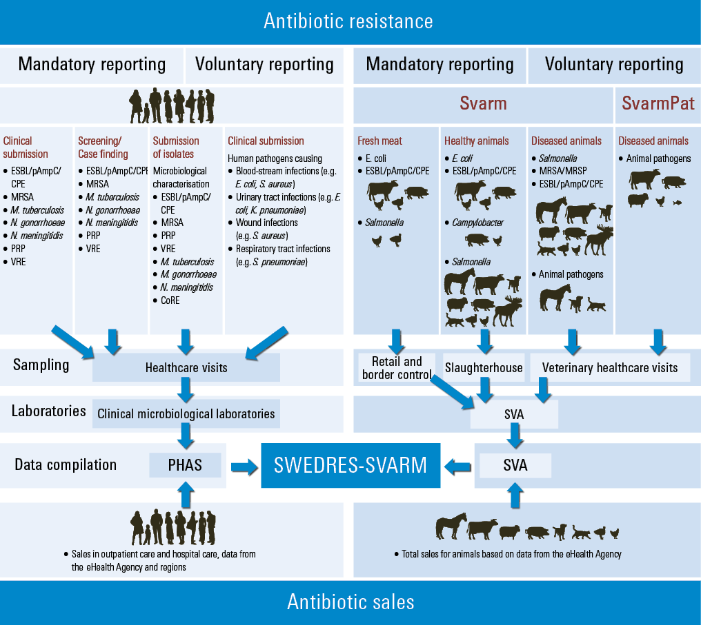

Guidance for readers
The Swedres-Svarm report is the result of a cooperation between the Public Health Agency of Sweden and the Swedish Veterinary Agency with the aim to present data relating to both humans and animals on the sales of antibiotics and on antibiotic resistance in a joint report.
Data on occurrence of notifiable antibiotic resistance in bacteria as well as data on resistance in zoonotic bacteria and in bacteria from clinical submissions are presented. Additionally, the report includes data on sales of antibiotics and resistance in so called indicator bacteria from healthy animals and from food of animal origin.
Data on resistance in bacteria from humans are mainly obtained from clinical microbiology laboratories and in addition via notifications from clinicians. They are compiled by the Public Health Agency of Sweden in Swedres. In contrast, data on animals and food, compiled by the Swedish Veterinary Agency, are from the national monitoring program in the veterinary field Svarm. This program is specifically designed to monitor resistance in bacteria from animals and food and is organised and run at the Swedish Veterinary Agency. Data in the veterinary field also emanate from other sources, such as the SvarmPat project and specific research projects. For details on data sources see respective bacteria in Antibiotic resistance in animals and Background data, material, methods and references.
Schematic view of antimicrobial sales and resistance monitored in Sweden 2025
Resistance in bacteria from humans and sales for humans to the left and resistance in bacteria from animals and food and sales for animals to the right (Figure 1).
Antibiotic sales
Swedres - Humans
Antibacterials for systemic use in humans are indexed as J01 in the Anatomical Therapeutic Chemical classification system. The J01 group also includes the antiseptic substance methenamine, which is not an antibiotic and is not a driver of antibiotic resistance. Throughout this report, methenamine is excluded whenever antibiotics are referred to or presented as a group. Statistics for dentistry includes oral metronidazole (P01AB01) in addition to antibiotics in the J01 group.
All pharmacies in Sweden are required to provide statistics on sales of all products on a regular basis to the Swedish eHealth Agency (E-hälsomyndigheten), which maintains a national database with sales statistics for all drugs. The database includes statistics on prescriptions to individuals issued by healthcare providers from all 21 regions in Sweden and encompasses primary healthcare centres, outpatient specialist clinics, hospitals and dental clinics. In addition, statistics on medicines sold on requisition to hospitals, nursing homes and other health- and social care facilities are also accessible through the database. While prescription data accurately reflects antibiotic use, procurement data based on requisitions are impacted by procurement-related factors that may over- or underestimate antibiotic use. For detailed description of the pharmaceutical system in Sweden, please refer to the Materials and methods, sales of antibiotics section.
Comparison of sales of antibiotics between regions and to the elderly population over time is complicated by the fact that there are differences in how drugs are distributed to residents in nursing homes. In Sweden, most people living in nursing homes still receive their medication by prescription, whereby data are included in outpatient sales. However, there are also nursing homes where medicines are procured by the facility and then dispensed to the residents. These sales are included in inpatient care data. Since routines differ between regions and over time, the estimation of antibiotic use to the elderly population is not entirely reliable.
Wherever sales of antibiotics to a certain population group are displayed (children aged 0-6 years, women aged 15-79 years, inhabitants in a region), the denominator is the total number of individuals in the same population group.
In this report the term ‘outpatient care’ includes all antibiotic sales on prescription to individuals. ‘Inpatient care’ includes antibiotic sales to hospitals, nursing homes and other health- and social care facilities. Since national data on antibiotic sales to hospitals in Sweden are combined with sales to some nursing homes and other facilities, the figures are not suitable for evaluation of antibiotic use in acute care hospitals.
As data on antibiotic sales to humans are not linked to treatment indications, this report has grouped antibiotics frequently prescribed for treatment of common infections in Sweden in order to estimate the prescription rates for these diagnoses. All figures and tables referring to these treatment indications are based on the following antibiotics: Table 1.
| Indication | Antibiotics included |
|---|---|
| Respiratory tract infections (RTIs) | Doxycycline (J01AA02; excluding packages larger than 50 tablets), penicillin V (J01CE02), amoxicillin (J01CA04), amoxicillin with enzyme inhibitor (J01CR02), cephalosporins (J01DB-DE; excluding ceftibuten J01DD14) and macrolides (J01FA). |
| Urinary tract infections (UTIs) | Pivmecillinam (J01CA08), trimethoprim (J01EA01), ciprofloxacin (J01MA02), norfloxacin (J01MA06) until 2020 and nitrofurantoin (J01XE01). |
| Skin and soft tissue infections (SSTIs) | Clindamycin (J01FF01) and flucloxacillin (J01CF05). |
| Acne vulgaris | Doxycycline (J01AA02; packages over 50 tablets), lymecycline (J01AA04), oxytetracycline (J01AA06) and tetracycline (J01AA07). |
Antibiotic resistance
Swedres - Humans
Most of the data on resistance in Swedres is derived from routine diagnostic samples sent for testing at clinical microbiological laboratories. The results are mostly presented as proportion of resistance in tables or graphs. The methods used for antibiotic susceptibility testing, whether MIC determination or disk diffusion method, are standardised by European Committee on Antimicrobial Susceptibility Testing (EUCAST) and available online at www.eucast.org.
The methods and breakpoints routinely used in Sweden are available at www.nordicast.org. EUCAST also presents yearly updated interpretative criteria for clinical use in human medicine, i.e. clinical breakpoints.
Svarm - Animals and food
Data on resistance in Svarm are from MIC determinations performed at the Swedish Veterinary Agency using broth microdilution following the standards of the Clinical and Laboratory Standards Institute (Clinical and Laboratory Standards Institute (CLSI) 2024). Results for isolates of zoonotic and indicator bacteria are interpreted according to ECOFFs from EUCAST (www.eucast.org). Clinical isolates from animals are generally classified by ECOFFs when such values are available. Interpretive criteria used are available as supplementary material on the SVA web page.
ECOFFs classify isolates with acquired reduced susceptibility as non-wild type. In Svarm, non-wild type isolates are called “resistant”. This classification is relevant for monitoring purposes, but it should be understood that resistance defined in this manner not always implies clinical resistance.
Since the first report from Svarm, the interpretive criteria for some combinations of bacteria and substance have been changed. To facilitate comparisons when retrospect data are presented, levels of resistance have been recalculated using current interpretive criteria if not otherwise stated.
Indicator bacteria in animals
In Svarm, Escherichia coli, and sometimes Enterococcus faecalis and E. faecium, serve as indicators for presence of antibiotic resistance in the enteric flora of healthy animals and in the flora contaminating food. The prevalence of acquired resistance in such commensal bacteria in animals indicates the magnitude of the selective pressure from use of antibiotics in an animal population. Most bacteria of the enteric flora are unlikely to cause disease, but they can be reservoirs for resistance genes that can spread to bacteria that cause infections in animals or humans. Prevalence of resistance in indicator bacteria contaminating meat indicates the magnitude of the potential human exposure to such reservoirs in food producing animals.
Multidrug resistance
The terms multidrug resistance (MDR), multiresistance and multiresistant are in Svarm generally used for isolates with acquired resistance to three or more antibiotic classes. However, for aminoglycosides every substance is considered separately because of the complexity of the resistance mechanisms against this class. Furthermore, for staphylococci each subclass of beta-lactams is considered separately but for Enterobacterales all beta-lactams are considered as one class.